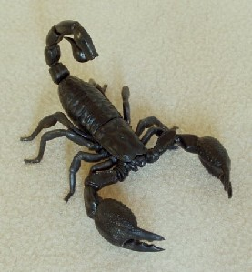

D - d
dɑ1 दा Etym: Bale; बाले. N सं. sir; महाशय. SD: address term, सम्बोधन वाचक शब्दावली. SEE: dɑ2 ‘this (proximate)’ ‘यह (निकटस्थ) दाhm:{2}’.
dɑ2 दा Etym: Bale; बाले. DEIXIS डीक्सीस. this (proximate); यह (निकटस्थ). SD: reference, संदर्भ. SEE: dɑ1 ‘sir’ ‘महाशय दाhm:{1}’.
dɑkɑr1 दाकार Etym: Bea; बेया. VAR: ɖɑkɑr डाकार; ɖɑkɑɽ डाकाड़. N सं. wooden basket used for carrying water; पानी लाने के लिए लकड़ी की टोकरी. SD: household, घरेलू. SEE: ɖɑkɑr ‘potato’ ‘आलू डाकार ’; dɑkɑr2 ‘this (proximate)’ ‘यह (निकटस्थ) दाकारhm:{2}’.
dɑkɑr2 दाकार Etym: Bea; बेया. DEIXIS डीक्सीस. this (proximate); यह (निकटस्थ). SD: reference, संदर्भ. SEE: ɖɑkɑr ‘potato’ ‘आलू डाकार ’; dɑkɑr1 ‘basket’ ‘टोकरी दाकारhm:{1}’.
dɑntɔ दानतौ CONJ संयो. therefore; इसलिए. SD: conjunct, संयोजक.
dem देम Etym: Pujjukar; पुज्जूकर. ADJ वि. good; अच्छा. SD: attribute, विशेषता.
di दी DEIXIS डीक्सीस. this (proximate); यह (निकटस्थ). di kɔbɔ ot ɲo be दी कौबौ ओत ञो बे. This is Kobo’s house. यह कोबो का घर है।. SD: pronominal, सर्वनाम. NT: Used as a short form of ‘khidi’. ‘खीदी’ शब्द का संक्षिप्त रूप।.
dijukʰi दीजूखी MORPH: di-jukʰi. DEIXIS डीक्सीस. that one; वह वाला. SD: reference, संदर्भ.
 |
dikirɑseni दीकीरासेनी VAR: ɖikʰirɑseni डीखीरासेनी. N सं. scorpion; बिच्छू. SD: insect & invertebrate, कीट-पतंग एवं अरीढ़ जीव.Environmental
dinɔl दीनौल INTJ वि बो. ok? (interrogation); ठीक हो? (प्रश्नवाचक). SD: emotion, भावनात्मक.
diyɑ दिया PRN सर्व. third plural (proximate, intermediate); तृतीय बहुवचन (नज़दीक). SD: pronominal, सर्वनाम.
diyɔːkkɑ दीयौऽक्का DEIXIS डीक्सीस. for this; इसके लिए. SD: reference, संदर्भ.
doɡotɑ दोगोता Etym: Bea; बेया. N सं. mushroom; कुकुरमुत्ता. SD: flora, फूल-पत्ती. SEE: cuɡotɔ ‘mushroom’ ‘कुकुरमुत्ता चूगोतौ ’.Environmental
doroɡil दोरोगील N सं. reef; समुद्री चट्टान. SD: natural environment, प्राकृतिक वातावरण.Environmental
du दू DEIXIS डीक्सीस. that (third singular, distant but visible); वह. du nɑmbikʰir stret-ɑk cɔne b-ɔm दू नामबीखीर स्त्रेताक चौने बौम. S/he will come tomorrow. वह कल आएगा या आएगी।. SD: reference, संदर्भ.
dubo दूबो MORPH: du-bo. ADJ वि. remaining; बाकी. SD: quantifier, परिमाण वाचक.
duini दूईनी MORPH: du-ini. PRN सर्व. third dual; वह दोनों. SD: reference, संदर्भ.
dun- दून- CLT क्लिटिक. clitic, third plural subject (exclusive); तृतीय बहुवचन कर्तावाचक क्लिटिक (अनन्य). ʈʰ-ut-conne-pʰo dun-ot-conne ठूत्चोन्नेफो दूनोत चोन्ने. I did not go, they did. मैं नहीं गया, वे गए थे।. SD: grammar, व्याकरण.
duɔttɔk दूऔत्तौक MORPH: du-ɔttɔk. ADJ वि. other; अन्य. SD: people, लोग.
duwɔːkkɑ दूवौऽक्का PRN सर्व. for that; उसके लिए. SD: reference, संदर्भ.
dyukʰe द्यूखे N सं. other; अन्य. SD: people, लोग.
d-/du-/di- द-/दू-/दी- PRN सर्व. third singular; तृतीय एकवचन. SD: pronominal, सर्वनाम.